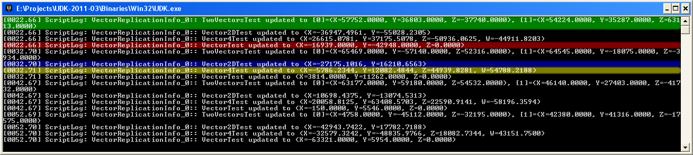
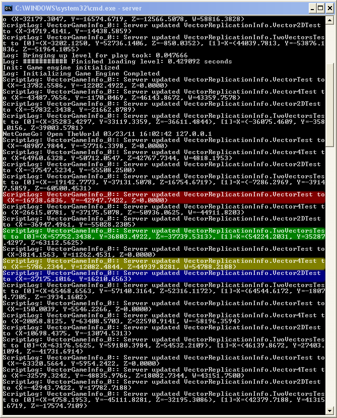
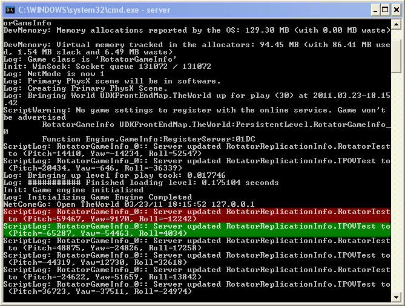
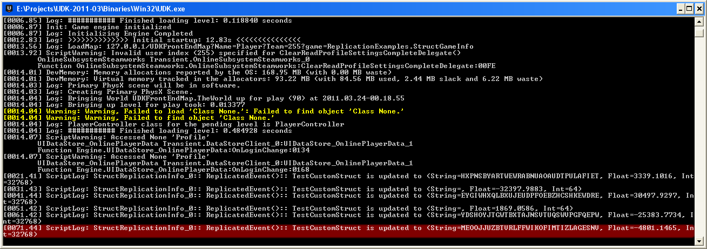
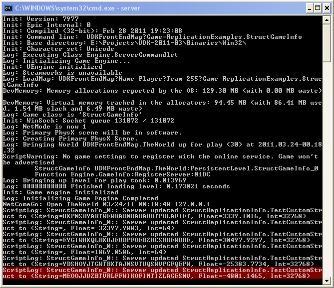
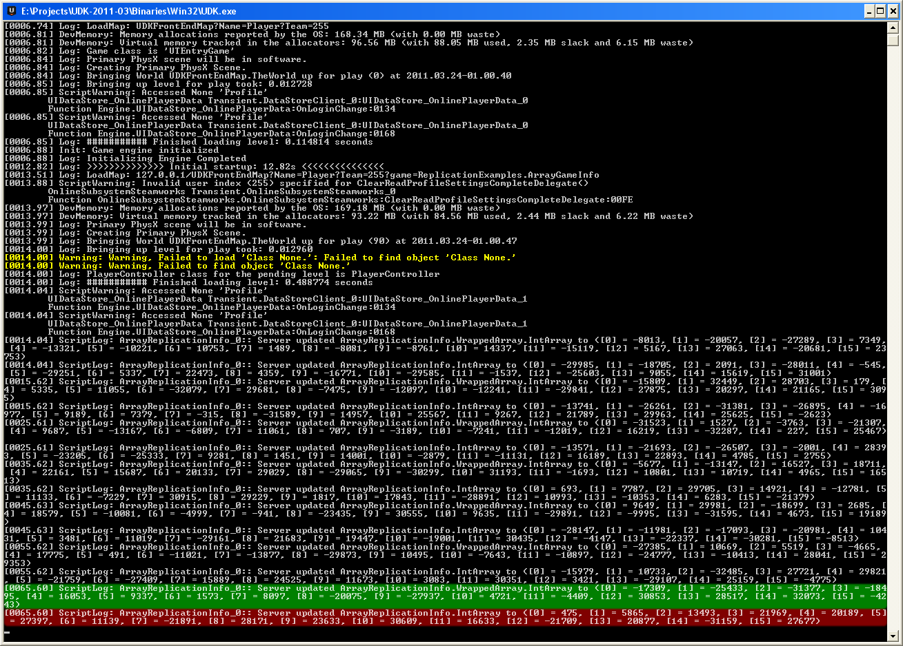
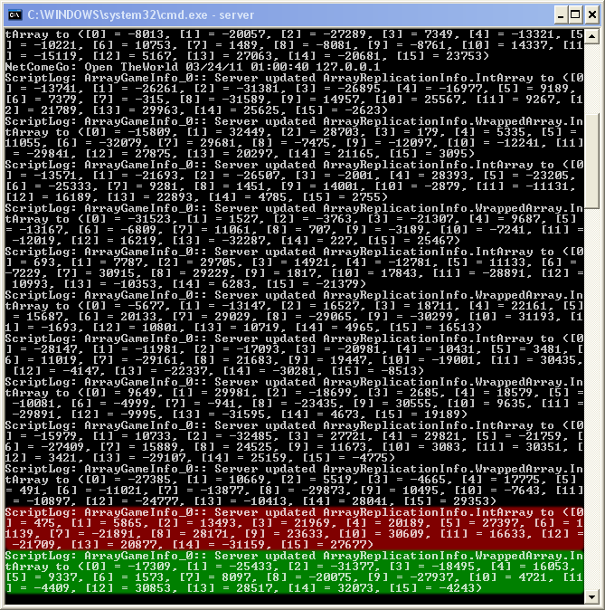

UDN
Search public documentation:
ReplicationVariableReplicationNotesKR
English Translation
日本語訳
中国翻译
Interested in the Unreal Engine?
Visit the Unreal Technology site.
Looking for jobs and company info?
Check out the Epic games site.
Questions about support via UDN?
Contact the UDN Staff
日本語訳
中国翻译
Interested in the Unreal Engine?
Visit the Unreal Technology site.
Looking for jobs and company info?
Check out the Epic games site.
Questions about support via UDN?
Contact the UDN Staff
UE3 홈 > 네트워킹과 리플리케이션 > 변수 리플리케이션 노트
변수 리플리케이션 노트
UDK 2011년 3월 버전으로 최종 테스팅 문서 변경내역: James Tan 작성. 홍성진 번역.
개요
게임에서 변수 리플리케이션 처리를 할 때 지켜야 하는 특수 규칙이 몇 있습니다.
벡터
벡터를 네트워크로 보낼 때 근사값으로 반올림한 signed integer 셋으로 변환됩니다. 리플리케이트되는 벡터는 (X=-1048576.f, Y=-1048576.f, Z=-1048576.f) 에서 (X=1048575.f, Y=1048575.f, Z=1048575.f) 범위 내에 있어야만 합니다. 이 범위를 벗어나는 값은 전송시 클램프됩니다. 더 정확하거나 큰 범위가 필요한 경우, float 셋으로 구조체를 직접 만들거나 각 컴포넌트를 별도로 전송하는 수밖에 없습니다.
벡터 리플리케이션 테스트
서버가 변경된 값을 클라이언트에 리플리케이트할 때, 클라이언트가 받는 것은 이와 같습니다. 보시듯이 벡터는 (Vector; 빨강) 소수점 부분을 잃습니다. 다른 구조체 안에서 사용된 벡터 (TwoVectors; 녹색) 또한 똑같은 증상을 보입니다. 벡터같아 보이는 구조체는 (Vector4; 노랑, Vector2D; 파랑) 벡터와 같은 식으로 압축되지 않기에, 온전한 정밀도의 표준 32 비트 범위로 전송됩니다.
서버가 모든 클라이언트에 전송하는 내용은 이렇습니다.
로테이터
로테이터(Rotator)는 네트워크를 통해 unsigned byte 셋으로 전송됩니다. 고로 전송되는 가장 작은 단위는, 256 언리얼 유닛 또는 1.406250 도 또는 0.024543 라디안 입니다. 정밀도는 약간 떨어지나, 차이는 거의 보이지도 않을 만치 매우 작습니다. 컴포넌트별 계산은 replicated_component = (component >> 8) & 255 로 합니다. 이는 음수든 양수든 어느 값이든 0 에서 255 사이의 값으로 바꿉니다. 수신측에서는 component = (replicated_component << 8) 로 합니다. 정밀도를 높이려면 integer 셋으로 구조체를 직접 만들거나 각 컴포넌트를 별도로 전송하는 수밖에 없습니다.
로테이터 리플리케이션 테스트
서버가 변경된 값을 클라이언트에 리플리케이트할 때, 클라이언트가 받는 것은 이와 같습니다. 보시듯이 로테이터 컴포넌트는 위의 변형을 거친 다음 전송됩니다. 클라이언트가 리플리케이트된 값을 받을 때, 클라이언트에서 변형됩니다. 서버가 모든 클라이언트에 전송하는 것은 이렇습니다. 다시 확인하자면 RotatorTest 는:
서버가 모든 클라이언트에 전송하는 것은 이렇습니다. 다시 확인하자면 RotatorTest 는: - RotatorTest.Pitch
- 59467 >> 8 == 232
- 232 & 255 == 232
- 232 << 8 == 59392
- RotatorTest.Yaw
- 9170 >> 8 == 35
- 35 & 255 == 35
- 35 << 8 == 8960
- RotatorTest.Roll
- -12242 >> 8 == -48
- -48 & 255 == 208
- 208 << 8 == 53248

구조체
구조체는 싱글 패스로 네트워크를 통해 전송됩니다. 벡터와 로테이터와는 다르게, 어떤 식으로 압축되거나 하지는 않습니다. 구조체는 모두 한 번에 전송되거나 아예 전송되지 않거나, "죽거나 살거나" 입니다. 그래서 구조체의 컴포넌트 하나만 업데이트하고 변경된 것만 전송하는 것이 가능하지 않습니다. 물론 수동으로 개별 변수를 전송한 다음 구조체 안에서 합성하는 식으로 가능하기는 합니다. 아무튼 일반적으로 큰 구조체를 리플리케이트할 때는 조심하시기 바랍니다.
구조체 리플리케이션 테스트
서버가 변경된 값을 클라이언트에 리플리케이트할 때 클라이언트가 받는 것은 이렇습니다. 보시듯이 모든 변수가 한 번에 업데이트되고 있습니다.
서버가 모든 클라이언트에 전송하는 모습은 이렇습니다.
정적 배열
정적 배열은 네트워크로 전송할 때 변경된 값만 효율적으로 전송합니다. 구조체 안에 정적 배열이 있을 경우 이 규칙 역시도 무너지는데, 구조체의 "죽거나 살거나" 규칙 때문입니다. 구조체 안에 커다란 정적 배열을 넣어 버리면, 배열 값 하나만 바뀌어도 전체 구조체를 전송해야 하니 주의하시기 바랍니다. 리플리케이트된 정적 배열은 448 바이트 미만이어야 합니다. 정적 배열이 조금 있는 구조체는 이 제약때문에 전송 못할 수가 있습니다. 정적 배열 리플리케이션 통지는 초기 리플리케이션 업데이트에만 작동합니다. 잇따른 정적 배열 리플리케이션 업데이트는 ReplicatedEvent 를 호출하지 않습니다. 그러나 다른 리플리케이션 통지 변수가 ReplicatedEvent 를 호출한다면, 정적 배열 역시도 ReplicatedEvent 를 호출합니다. 구조체 안의 정적 배열은 항상 ReplicatedEvent 를 호출할 것입니다. 즉 정적 배열이 ReplicatedEvent 를 제때 호출하지 않고 있는 것 같다면, 동시에 불리언을 리플리케이트하여 호출되도록 하십시오.
배열 리플리케이션 테스트
서버에서 클라이언트가 받은 내용은 이렇습니다.
서버가 모든 클라이언트에 전송하는 내용은 이렇습니다.
동적 배열
동적 배열은 전혀 리플리케이트되지 않습니다. 액터의 동적 배열을 보내야 하는 경우, linked list 를 사용하면 됩니다. 아니면 자체적으로 리플리케이션 메서드를 만들어야 할 수도 있습니다. 또 한 가지 방법은 원격 프로시쳐 호출을 통한 방법인데, 허용 대역폭을 쉽게 넘어설 수가 있습니다. 즉 동적 배열은 리플리케이션이 필요치 않은 상황에 써야 합니다.

{kind=link}
{kind=link}
{kind=link}